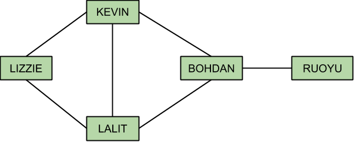
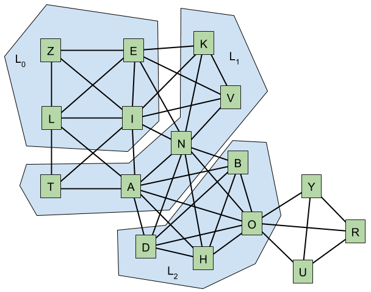
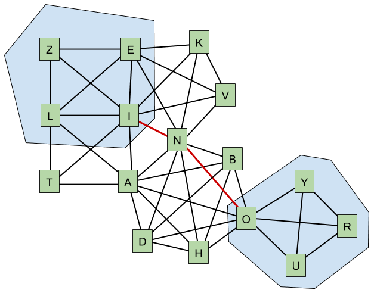

For this test set, we can build an undirected graph, where the nodes represent people and there is an edge between two nodes if and only if the names of the respective people have a common letter. Then each query can be answered by finding a shortest path between two nodes in the graph.
Assuming that L is the length of the longest name (recall that L ≤ 20), it is straightforward to build the graph in O(L2N2) time by considering each pair of nodes and using a nested pair of loops to look for a common letter in the names. The time complexity can be reduced to O(LN2) if we mark the letters of one of the names, and then iterate over the letters of the other name to see if any of those letters has been marked. A better yet approach is to represent the letters of a name as a 32-bit integer, where the i-th bit is 1 if the i-th letter of the alphabet is present in the name, and 0 otherwise. Then testing for common letters in two names boils down to checking if the logical AND of the respective bitmasks is non-zero, and thus the graph can be built in O(LN+N2) time.
The graph may have up to N × (N-1) / 2 edges, therefore, if we answer each query independently, say, using the breadth-first search, the overall time complexity of answering all Q queries is O(QN2), which might be too slow for large values of Q. Even if we never compute the answer for the same query twice by memoizing the results in a two-dimensional array, the time complexity is still O(N4).
A better alternative is to pre-compute the whole distance array in O(N3) time using the Floyd-Warshall algorithm or running breadth-first seach N times, once from each node. Then the individual queries can be answered in constant time and the overall time complexity becomes O(LN + N3 + Q).
Here N can be large, so we really need an algorithm that is subquadratic in N. Let us look at the problem from a different angle. Using the first sample test case, consider the friendship graph below, and suppose that we need to find the length of the shortest friendship chain between LIZZIE and RUOYU.
We start out with the set of letters L0 = {L,I,Z,E}. Since the names KEVIN and LALIT have at least one letter in L0, we know that the shortest friendship chain to these names has length 2. By extending our search to the names KEVIN and LALIT, we have reached the letters L1 = {K,V,N,A,T}. Since BOHDAN has some letters in L1 (N and A), the length of the shortest friendship chain from LIZZIE to BOHDAN is 3, and adding BOHDAN leads to a new set of letters L2 = {B,O,H,D}. The name RUOYU has the letter O in L2, therefore, the shortest friendship chain to RUOYU has length 4.
The crucial observation here is that we are essentially doing a breadth-first search in a very small graph G on the set of nodes {A,B,C,...,X,Y,Z}, where there is an edge between a pair of letters {u,v} if and only if the letters occur in the same name. The graph for our example is illustrated below.
The goal of the breadth-first search was to find the shortest path connecting the sets of letters {L,I,Z,E} and {R,U,O,Y}. One of such paths is highlighted in red in the picture below. Instead of doing the breadth-first search, we could also pre-compute all-pairs shortest paths in G in constant time (yes, O(263) is still O(1)), and then answer each query in O(L2) time by taking the minimum distance over all pairs of letters {a,b}, where the letter a occurs in the first name, and the letter b occurs in the other name.
We can build the graph G in O(L2N) time by considering each of the input names and creating an edge between each pair of letters in the name. Consequently, the overall time complexity of the algorithm is O(L2(N+Q)).